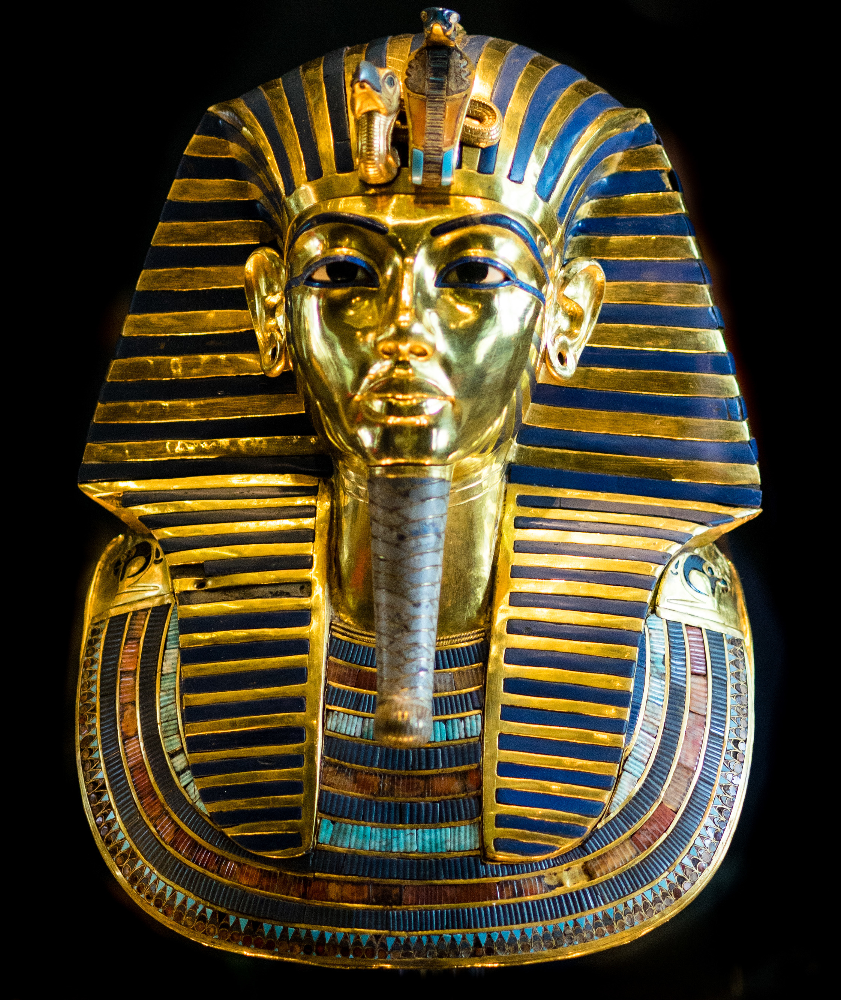
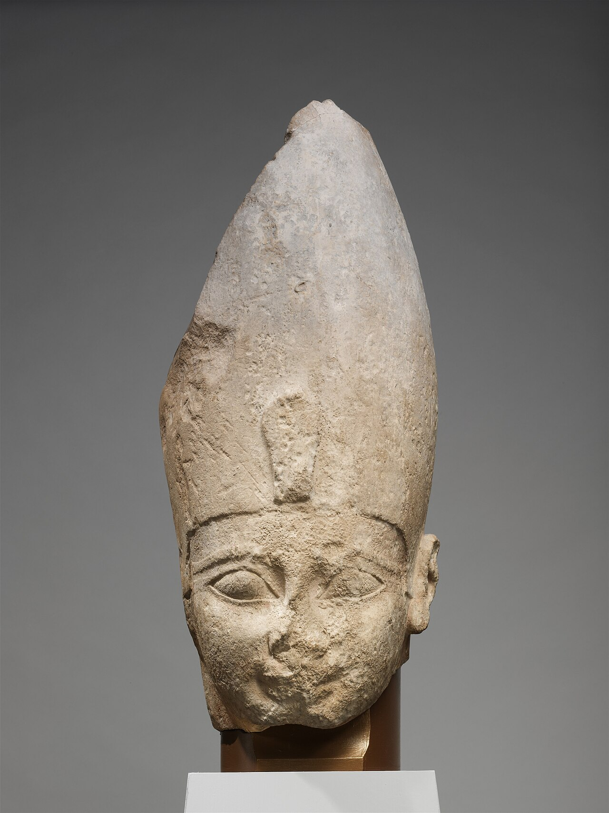
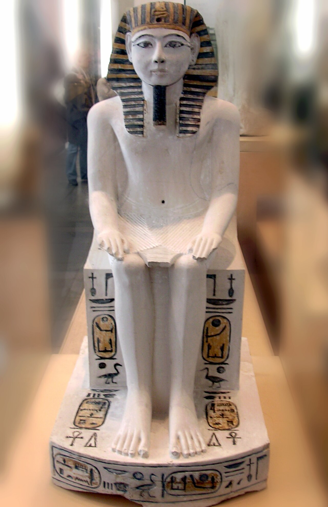
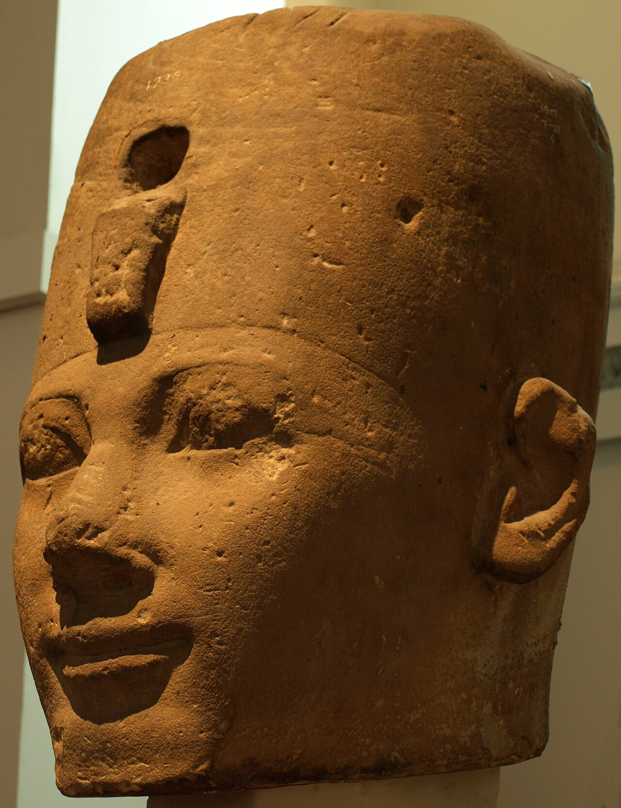
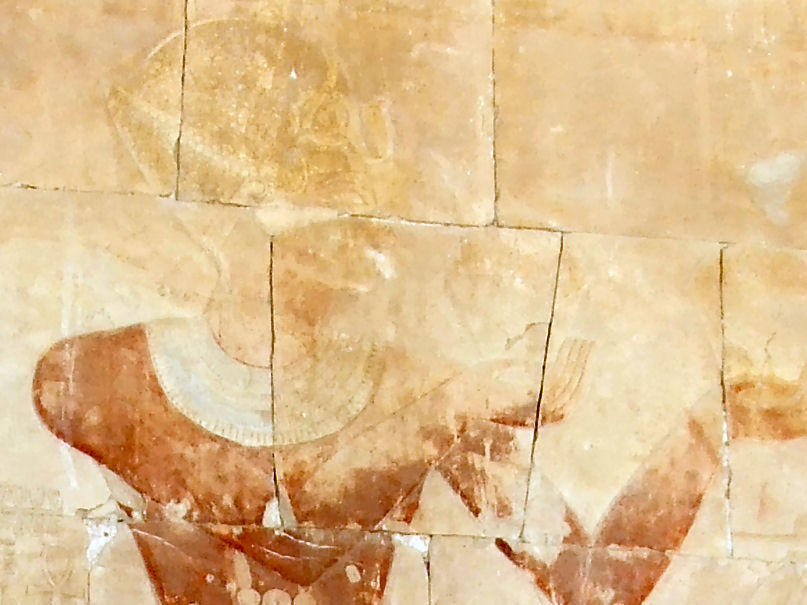
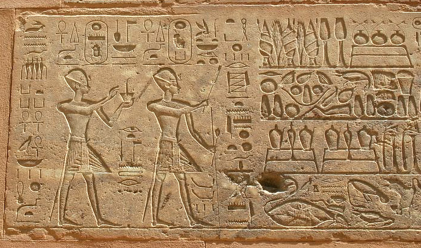
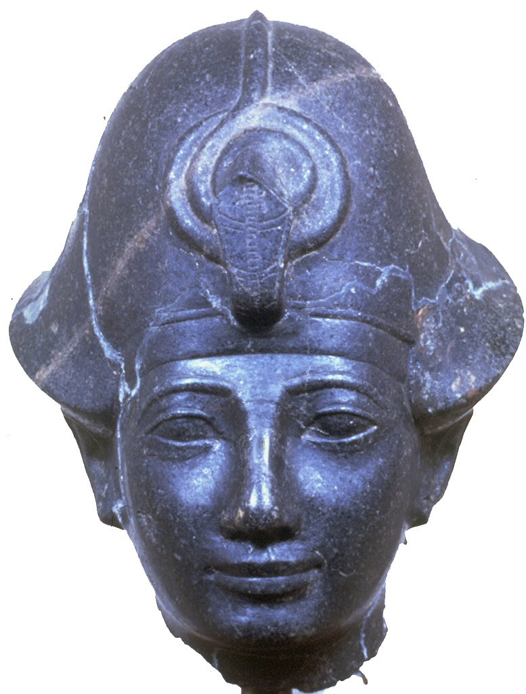
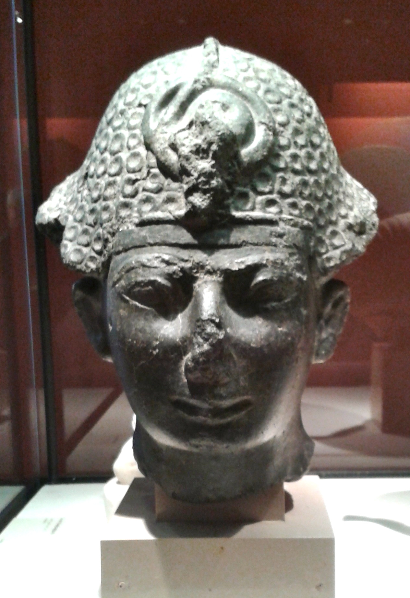
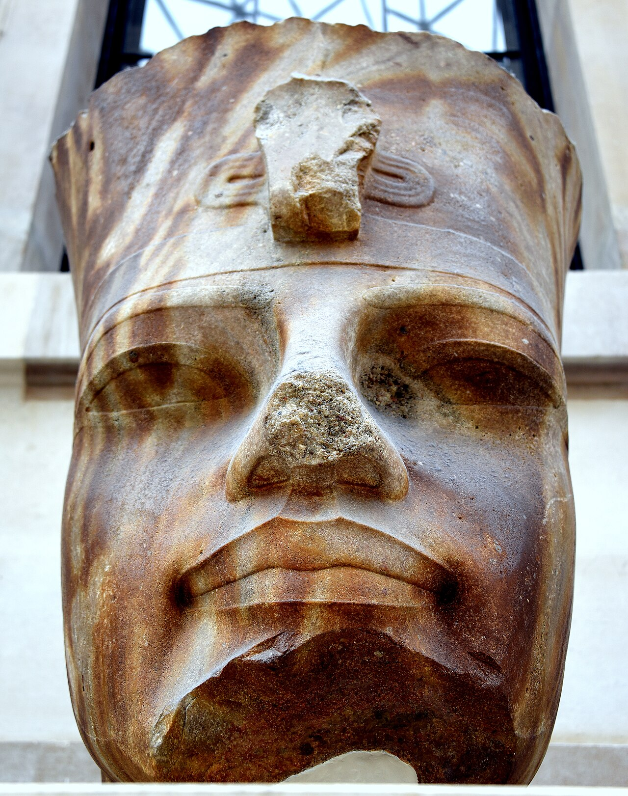
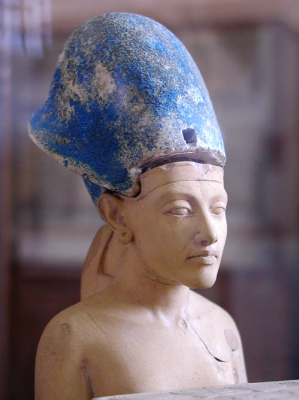

The serpent crowns the most famous royal face.

A clear early-dynasty forehead serpent.

Small, but visibly placed at the brow.

One of the clearest brow-serpent examples.

The cobra is part of the royal silhouette.

Two rulers, two centered cobras.

The protective serpent is explicit.

A three-dimensional crown-front cobra.

The serpent dominates the brow.

Even compact statues keep the cobra in view.
